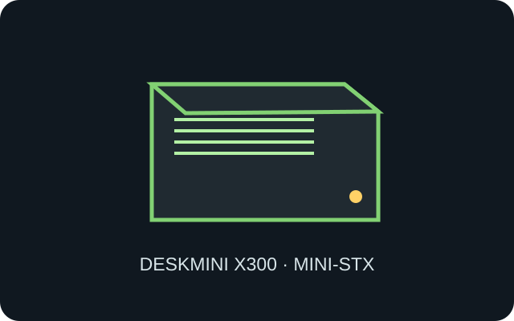

[ IDENTIFIED BAREBONE // MINI-STX ]
ASRock DeskMini X300
155 × 155 × 80 mm, approximately 1.92 L; Mini-STX-compatible barebone using an AM4 desktop APU and a model-specific mainboard/power arrangement.

MODEL TYPE: DeskMini X300 Series barebone. AM4 socket support is CPU/BIOS-limited; X300 is not the later X600 chassis.
Specifications & fit
| Dimensions / type | 155 × 155 × 80 mm (W × D × H), roughly 1.92 L, DeskMini Mini-STX system enclosure. |
|---|---|
| Board / power | ASRock X300 platform board for compatible AM4 APUs; supplied external 19 V, 120 W adapter. Only low-profile compatible CPU cooling fits; not ATX/Micro-ATX power. |
| Drive bays | Two 2.5-inch SATA drive mounts (7/9.5-mm devices per ASRock configuration) plus two M.2 2280 sockets, conditional on APU and fitted cables. |
| Expansion | M.2 Key E 2230 position can host wireless; no standard PCIe card slot. Memory uses two SO-DIMM sockets; the Mini-STX board and rear I/O are part of this design. |
| Thermal / maintenance compatibility | CPU is limited to supported APU TDP and cooler height up to 46 mm. Clear side ventilation, use the correct low-profile cooler, disconnect 19 V input and handle compact SATA harnesses carefully. |
Compatibility & preservation notes
Unlike a sealed mini PC, DeskMini X300 is a barebone, but its case, board, external adapter, mounting and cable kit are a matched small-form-factor system. Check ASRock CPU support list/BIOS before installing an APU.
- Observe supported CPU cooler height, memory type, M.2 key/length and SATA cable routing; bulky desktop DIMMs and coolers do not fit.
- Keep the drive screws, two SATA cables, adapter, heatsinks and chassis screws together; do not block air slots with an oversized CPU cooler.
Manufacturer specifications & manuals
- ASRock — DeskMini X300 Series specificationsManufacturer platform, physical dimensions, supported components and fit notes.
- ASRock — DeskMini X300 Series user manualManufacturer manual for installation, drive mounting and service procedures.